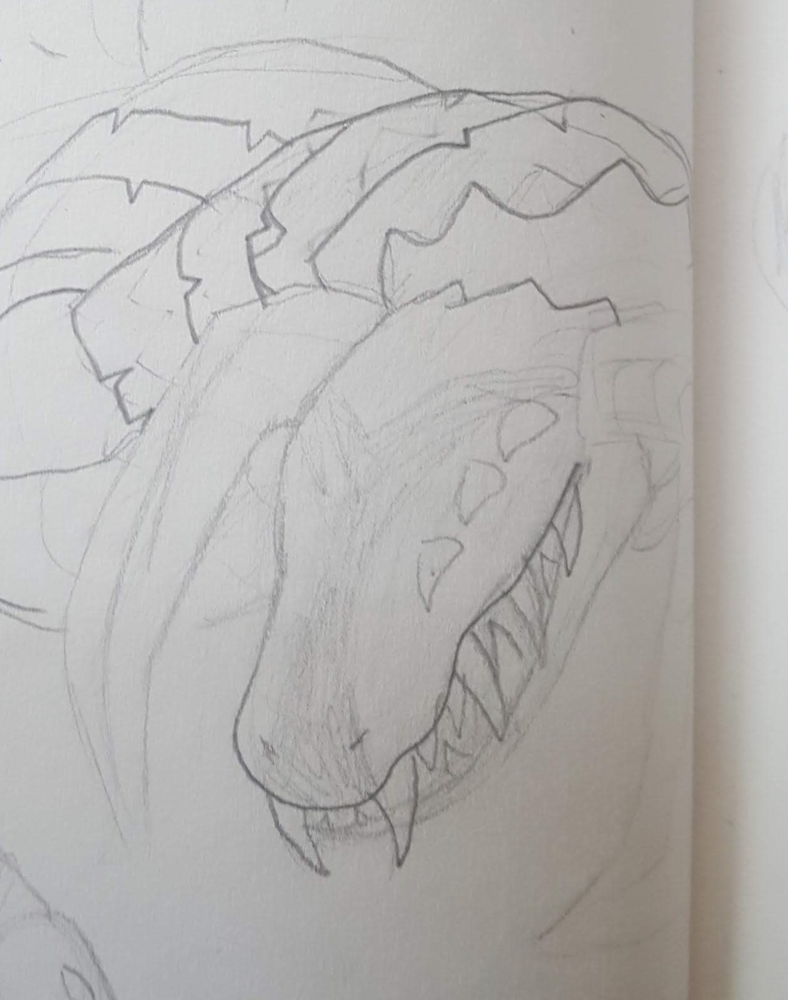

Welcome to Dewside
Log of Eliwood's Thoughts

10:46 pm; march 22, 2021 (tuesday)
thinkin' about how i'll never dance again..... guilty feet have got no rhythm...11:16 pm; march 22, 2021 (monday)
my siblings got me sonic mania for my birthday!! it's so fun, i can't stop playing it. and my baby sister gave me band-aids shaped like dinosaurs :))
1:12 pm; march 20, 2021 (saturday)
*soothes my car as though it's a horse in breath of the wild*12:13 am; march 18, 2021 (thursday)
the last few weeks have been a little rough for me. home life can be a real struggle, and school is so overwhelming (don't take 18 college credits a semester, kids! especially if you're baby, like i am).i'm grappling with the fact that i turn 18 this weekend, and.... i don't know how to feel. it's surreal, almost. on one hand, i feel so old, and ready to escape and be my own person. but on the other, i feel like i'm just a kid. i'm small. it seems like just yesterday was moving day, and just before that, the start of high school.i keep revisiting things i used to love, just to say goodbye, y'know? it's weird, but in an odd way it helps. old shows, ships, sites.
it's almost funny how nervous i am to have this number put upon me-- it's so arbitrary, yet earth-shattering at the same time.
i don't know what the future holds, but i'm trying as hard as hell to see it through. sometimes i don't want to, but i will. someday, i will be free, and happy, and true. i won't have to hide anymore.
that's a day i want to see.
sorry for getting heavy all of a sudden, i just have a lot on my mind.
4:17 pm; march 17, 2021 (wednesday)
"I'M GOING FULL POWER! XBOX, LET'S GO!"-the 7 year old i nanny
12:25 pm; march 9, 2021 (tuesday)
look, all i'm saying is that if anyone were to buy me something off of this site i would marry them instantly


IT'S ALL SO CUUUUUUUTE T-T
12:18 pm; march 9, 2021 (tuesday)
 these boots are made for walking
these boots are made for walkingphotography class is a... thing
1:40 pm; march 7, 2021 (sunday)
i have put more effort into this website than i have on any part of school in 3 years.1:28 pm; march 7, 2021 (sunday)
I published a piece of fanfiction for the first time in over a year, yesterday. I think I might make a page for my writing, since, y'know, everything I create must go on this site somehow.9:45 am; march 4, 2021 (thursday)
i woke up this morning thinking fond thoughts about Leo Fire Emblem, so i think i must have had a good ol' FE dream last night.it's time to appreciate fates, despite how objectivley broken the story is. i really hope they remake it someday and give it the treatment it deserves (fates walked so three houses could run)
seriously, though! how can you NOT love this bastard?
1:54 pm; march 3, 2021 (wednesday)
howdy! sorry i've been so quiet :(( I've been kinda busy and I reallly need to catch up on school stuff (I. HATE. SCHOOL.). i'm honestly so frustrated with schoolwork that just thinking about it makes me want to cry3:53 pm pm; march 1, 2021 (monday)
happy march!! i turn 18 this month, and that's messing with my head
i've been neglecting this site in favor of my nintendo fansite project lately. it's called eligood, it's got some neat stuff, go check it out

6:10 pm; february 27, 2021 (saturday)
Just finished Forrest Gump, here are my thoughts:yeah it was really good
10:07 pm; february 26, 2021 (friday)
it feels so good to do the bare minimum and turn in an assignment on time!this is objectively the best song to speedrun your schoolwork to.
9:51 pm; february 26, 2021 (friday)
i don't care what you think. this is the funniest interaction to occur on neocities, ever.
6:36 pm; february 21, 2021 (sunday)
i have several things to post but first i must plug my contest on the Other Site
5:12 pm; february 18, 2021 (thursday)
MY STUFF GOT HERE SO QUICKLY OMG8:39 pm; february 15, 2021 (monday)
i bought a bunch of pikachu, eevee, and cinnamoroll stuff online last night. it should arrive by the end of the week, and i'm super excited! this marks my first personal online purchase (and YES, i checked that the site is legit). i even got my brother to chip in for shipping costs, since he's getting a hello kitty lanyard :)
look at these cute keychains!
11:24 am; february 14, 2021 (sunday)
my parents won't stop pestering me about whether i have a crush on anyone, and then when i get frusterated at them, they move on to ask about BON. ughhhhhhhno, i'm pretty sure my goddamn LESBIAN friend isn't interested in any boys at work, MOM. but i can't explain that to you, so you'll just keep asking until you get suspicious
also i think i'm in the middle of a bi-cycle with a heavy preference for women so uh i'm not gonna have much to impress my mother with either
10:15 am; february 12, 2021 (friday)
road trip dayyyy6:39 pm; february 10, 2021 (wednesday)
wednesdays and thursdays are such garbage days. on wednesday, i go to school at 8 (with a 20 minute drive), come home at 12, go to work at 1, come home aat 4:30, and then go back to school at 6. thursdays feel similar because i have tap class in the evening, and tuesdays might end up going this way if my parents start making me go to these dumb youth group activities. i need restalso, i'm sort of at a standstill with this site and it's frusterating. i'm not sure what to add or fix.
2:52 pm; february 7, 2021 (sunday)
me when asked to complete a simple task for school
9:15 pm; february 6, 2021 (saturday)
i learned about extreme barbie jeep racing today. i want to do it so badly. it is how i choose to dieand UPDATE: i am actually moving forward with the dragon puppet!!!! i'm gonna make grima from fire emblem awakening (or, a slightly cutesy version, anyways. he really is a gnarly looking beast). i told my parents i want to do it, i'm making sketches, and i am very, very happy to actually be moving forward with a project i think of. :)

my version of the fell dragon!
6:43 pm; february 5, 2021 (friday)
i want to DO something.i saw a youtube video earlier on how to make a giant dragon puppet. maybe i'll do that
9:01 am; february 3, 2021 (wednesday)
how many times can you have a dream about being with a fictional character before it's weird? 2? 3? 4? i think i've passed the threshold.i'm looking to see if my university has a furry club. i have to know
alright, i'm back. looks like there isn't one (this is so sad)
8:31 am; february 3, 2021 (wednesday)
wanted to build on my system of archiving posts, so i've wiped the page again! here's to a new round of posts